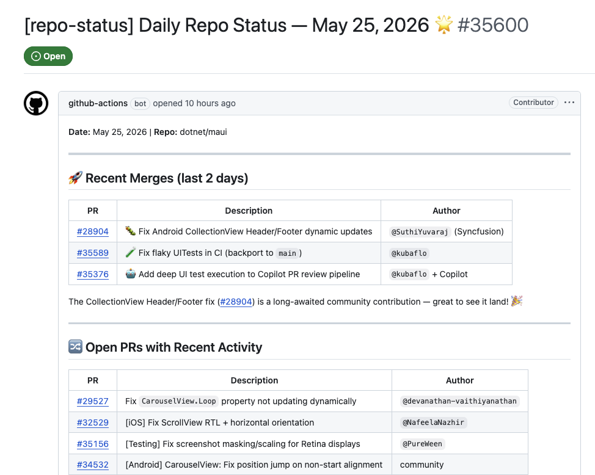
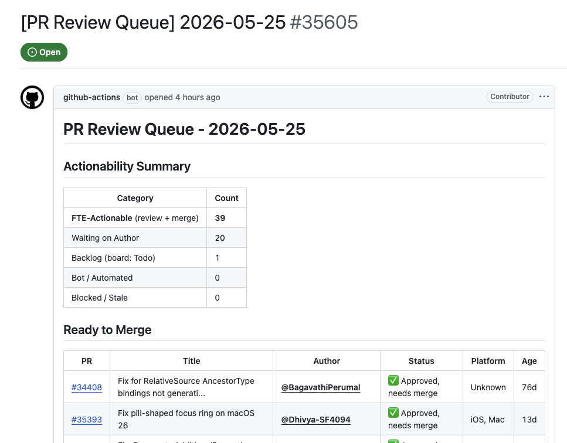
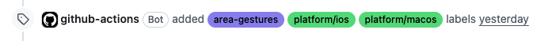
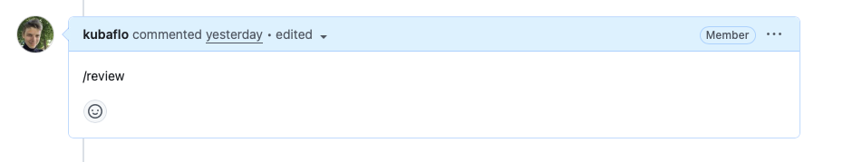
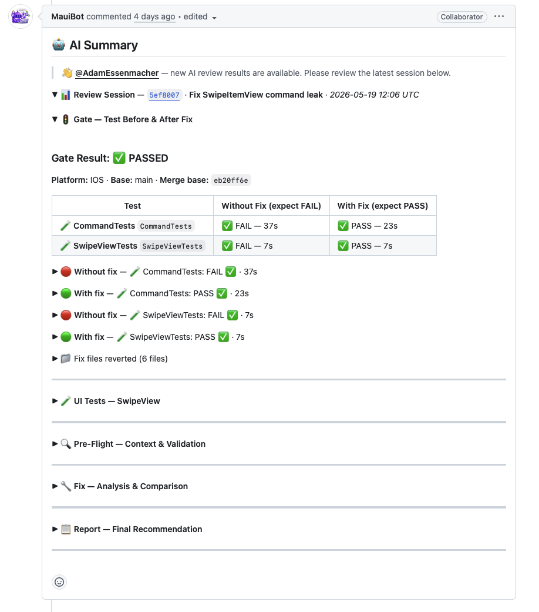
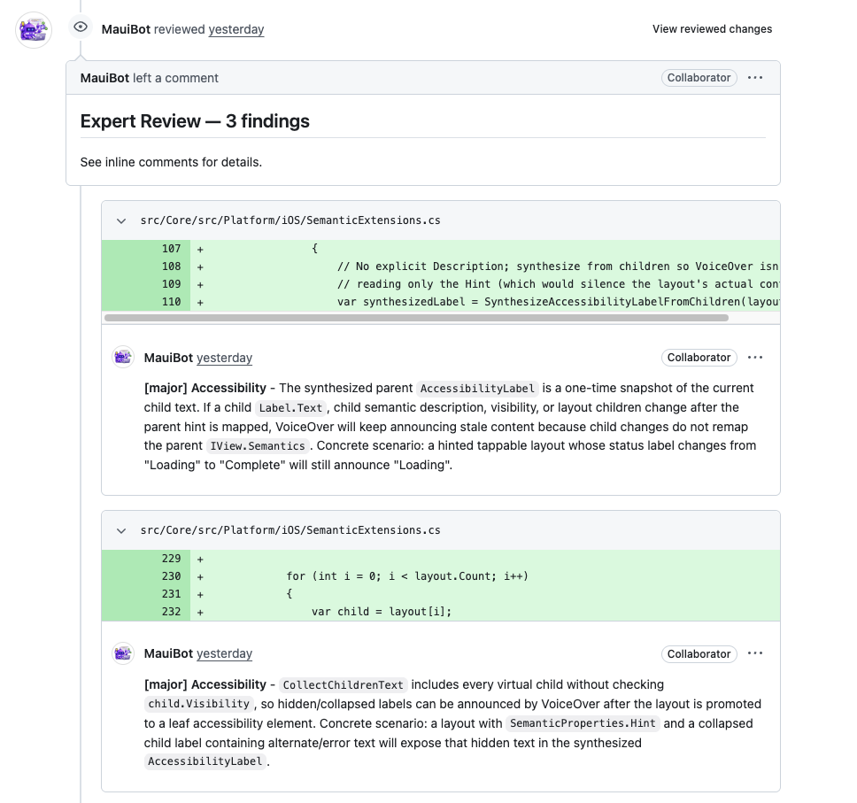
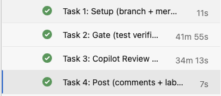
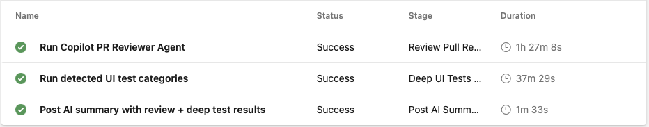
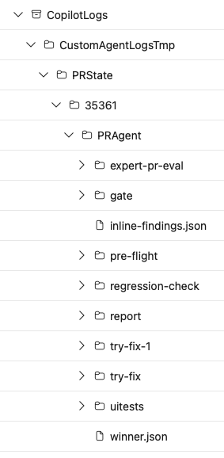

.NET MAUI
AI assistance is the default.
Human ownership stays.
A practical open-source story, revisited since May.
Everyday AI assistance. More community contributions.

Jakub Florkowski
@kubaflo
Give reviewers a better starting point.
A useful agent does not just write an answer. It assembles something another person can inspect.
Find context
Connect the issue, code paths, platform conventions, and earlier attempts.
Test a claim
Ask whether a test fails without the fix and passes with it.
Show the work
Leave findings, test results, and caveats on the pull request.
The positive story: make the next human decision better informed.
Talk track: distinguish a proposed answer from checked evidence. Neither replaces maintainer accountability.
What a Single Review Costs
Understand the bug, the change, and the risks
Platforms to verify (Android, iOS, Win, Mac)
Review Compounding Surface Area
- Review is iterative: New commits can require fresh analysis and validation.
- Evidence takes work: Reproduce the failure, verify the fix, then check for side effects.
The Shift to Agentic Workflows
The Vision
Repository context + platform checks + reproducible evidence.
The Core Ecosystem
pr reviews. sandbox validates. write-tests builds coverage.
Let's look at how this system operates step-by-step.
Daily Agentic Workflows
Scheduled intelligence. Human priorities.
Markdown prompt → compiled workflow → daily activity report.

find-reviewable-pr → categorized queue → maintainer action.

Step 1: Automatic Labeling

Trigger
PR or issue event starts the workflow.
Skill: agentic-labeler
Sandboxed agent reads paths and infers area + platform.
Safe-Output Write
Separate write job applies the proposed labels.
Platform inference:
*.android.cs → platform/android ·
*.ios.cs → platform/ios + platform/macos ·
*.windows.cs → platform/windows ·
*.maccatalyst.cs → platform/macos
Step 2: /review Triggers the Pipeline

Azure DevOps
Starts specialized virtualized environment pipelines.
Setup Environment
Installs target SDKs, emulators, and Copilot CLI.
Script Command
Review-PR.ps1 launches core validation routines.
The 5 Phases of Review
Workspace
Merge PR into main, isolate review branch.
Gate Verification
FAIL without fix; MUST pass with fix applied.
Review Analysis
Expert Review (30 dims) & parallel Try-Fix models.
Comment Post
Post AI Summary & inline feedback directly to PR.
Ecosystem Labeling
Apply status badges for automated tracking.

Try-Fix: How It Works
Explore candidates. Test behavior. Recommend a fix.
Analyze Problem & Existing Fix
Issue + diff + gate results.
Generate Alternative Candidates
Try another strategy; learn from failures.
Build, Deploy & Test on Device
Run selected tests; report gaps.
Compare & Recommend Best Fix
Compare evidence; leave a diff and rationale.
Each candidate goes through expert self-review before testing
Expert Review: How It Works
Platform-aware findings, right on the diff.
30 Architectural Dimensions
Lifecycle, threading, layout, accessibility, memory.
Per-Dimension Sub-Agents
Domain-specific context and checklists.
Independence-First Assessment
Code first; description second.
Inline Findings on the PR
File + line + actionable explanation.
See it in action: dotnet/maui#35590

Let's See It Live
PR #35582 (Memory Leak)
Label.FormattedText leaks when a shared FormattedString is stored in Application.Resources. Let's walk through how the AI review pipeline handles this PR end-to-end.
The Skills Behind the Curtain
pr-review
Orchestrates the review cycle.
verify-tests-fail
Gate check: UI tests must fail prior to patch integration.
try-fix
Explores alternative fix candidates.
code-review
Executes cross-platform checks across 30 architectural dimensions.
write-ui-tests
Generates native multi-platform verification assets.
learn-from-pr
Captures lessons as reusable repository context.
Reusable skills + repository instructions = domain-specific support.
Pipeline Deep Dive
Azure DevOps Build #14206157 — ci-copilot.yml · Review-PR.ps1
Tasks (Review Stage)

Stages Overview

Copilot Logs Artifacts

AI assistance is the default.
of PRs AI-assisted since June 2026.
Maintainer-reported estimate · June 2026 onward
A bigger contribution stream.
community PRs merged
Less time from PR to merge.
community median PR-to-merge time
More PRs reached merge.
AI across the engineering loop.
Context → candidates → checked evidence → human decisions.
AI-assisted.
Human-owned.
All 60 Copilot app-authored merges in the snapshot
were merged by human-classified accounts.
Monthly PR activity: exact counts.
| Month | 2025 opened | 2025 merged | 2026 opened | 2026 merged |
|---|---|---|---|---|
| Jan | 224 | 150 | 285 | 176 |
| Feb | 273 | 212 | 283 | 199 |
| Mar | 306 | 210 | 270 | 376 |
| Apr | 237 | 171 | 267 | 222 |
| May | 219 | 164 | 221 | 203 |
| Jun | 301 | 174 | 269 | 245 |
| Jul | 321 | 171 | 391 | 294 |
| Aug | 241 | 192 | 529 | 343 |
| Sep | 245 | 184 | 512 | 292 |
| Year | Merged | Closed without merge | Total decisions |
|---|---|---|---|
| 2023 | 1697 | 367 | 2064 |
| 2024 | 1327 | 373 | 1700 |
| 2025 | 1628 | 585 | 2213 |
| 2026 | 2350 | 898 | 3248 |
2026 vs 2025: closures +53.5%; decisions +46.8%. 173/898 closures currently carry agent-reviewed—not all AI-assisted closures or proof of AI causation. Labels and latest closure metadata can change; reasons and quality are unmeasured.
Resolution JSON · 36 closure buckets · Reproducible collector · collected 05 Oct 2026, 15:32:32 UTC.
| Year | Opened | Merged | Closed without merge | Still open |
|---|---|---|---|---|
| 2023 | 2051 | 1675 | 376 | 0 |
| 2024 | 1793 | 1361 | 432 | 0 |
| 2025 | 2367 | 1733 | 632 | 2 |
| 2026 | 3027 | 2022 | 949 | 56 |
2026 cohort: 98.1% terminal. Of the 1,005 not merged, 949 (94.4%) were closed without merging; 56 remain open. Not all remaining PRs were closed. These are cohort states—not the calendar totals above or the repository's entire backlog.
AI participation is visible at scale.
Labels, app authorship or commit credit; overlapping signals counted once. Jan–Sep snapshot detects less than all AI use and is separate from the June-onward maintainer estimate. Exact counts · Definitions.
AI signals: exact subset counts.
| Month | All merges | Signal union | Review label | App author or credit |
|---|---|---|---|---|
| Jan | 176 | 59 | 12 | 47 |
| Feb | 199 | 110 | 55 | 59 |
| Mar | 376 | 317 | 244 | 148 |
| Apr | 222 | 188 | 111 | 126 |
| May | 203 | 163 | 135 | 83 |
| Jun | 245 | 195 | 139 | 123 |
| Jul | 294 | 234 | 148 | 162 |
| Aug | 343 | 232 | 128 | 161 |
| Sep | 292 | 240 | 151 | 150 |
AI builds. AI reviews.
Coding signal
Copilot app author or commit credit.
Review signal
Current agent-reviewed label.
444 PRs overlap. 1,738 unique PRs have an observed signal.
868 human-account-authored PRs carry explicit Copilot credit. Jan–Sep 2026; public signals, not autonomous work. Scope and scan limits.
Talk track: the observable change is wider participation in the workflow. These counts do not measure reviewer hours saved, finding quality, or AI's share of the code.
Humans remain in the loop.
60 Copilot app-authored PRs merged; 37 in the matched 2025 window.
60 / 60
Merged by human-classified accounts.
55 / 60
Visible human comment or review before merge.
44 / 60
Visible human approval before merge.
The other five are not proven human-free.
Jan–Sep 2026. Account classification is not proof of manual merge clicks. Definitions · Full cohort.
Suggestions can become contributions.
“@kubaflo I have updated the changes”
On an Android SearchBar PR, the public commit sequence includes “Updated suggestion” and “committed the suggestion”.
Talk track: feedback and revision are part of engineering. Visible uptake is encouraging, but adoption alone does not validate a suggestion or measure satisfaction.
Source: dotnet/maui#35197 · author's public follow-up. Count uses current s/agent-suggestions-implemented OR s/agent-fix-implemented on the 1,139 community-labeled merges. Examples and caveats.
Two sources. Two different scopes.
Matched windows
January through September in each year. UTC merge-date buckets; October is partial and excluded.
Repository-wide
All dotnet/maui PRs in scope, including ports and dependency automation. A merge is not a unique feature or bug fix.
Observable signals
Review labels are current state, not event-time coverage; they can change later. App authorship is a different, incomplete AI signal.
≈99% is a maintainer-reported estimate supplied 05 Oct 2026, covering June 2026 onward. It is not computed from the Jan–Sep snapshot. Estimate provenance.
Do not compare the old May deck's reviewed-PR total with a count of merged PRs carrying a label. The populations and time windows differ. Only the first 100 original commits are scanned; 27 current-year PRs are truncated, with merge-commit credit also checked.
Collected . Full dated JSON · Qualitative sources · Reproducible collector (existing GitHub CLI login; run python3 evidence/collect_maui_ai_evidence.py --output fresh-snapshot.json).
What the figures do—and do not—show.
Incomplete traces
Public metadata misses local and private AI assistance.
Test the suggestion
Passing selected tests is not proof of universal correctness.
Compare cohorts
PR mix and release timing also affect outcomes.
Community median: 12.211 → 9.067 days. All-PR median: 1.689 → 3.004 days. Observed outcomes—not causal AI attribution.
No causal productivity multiplier, shipped-regression rate, satisfaction score, or human-free percentage is measured. Opened and merged PRs are independent event cohorts.
A label is not a verdict.
“I tested this locally, and it did not resolve the issue.”
Label says uptake
Win / implementation labels are present.
Author tests
The suggestion did not fix the issue.
Learn and verify
Behavior matters more than a badge.
dotnet/maui#35358 · author follow-up · 04 Oct 2026 snapshot. Ineffective suggestion—not proof of a shipped regression.
Talk track: this is why the human loop matters. Public disagreement is useful evidence, not something to hide behind a success badge.
If You Submit a PR Today
Classify
Auto-labeled with area & platform tags.
Gather evidence
AI review with actionable feedback posted directly.
Human review
Human reviewer assigns feedback with AI context.
Maintainer decision
Merge only when ready; shipping follows the release process.
Try It Yourself
Contribute to MAUI
Bring a clear repro and tests; AI-assisted review can add evidence, not a guaranteed signoff.
Use the agents locally
Install Copilot CLI, clone the repo, and try out /plan workflows.
Steal our approach
Our instruction files and custom task skills are entirely open source.
Thank You!
Questions?
Jakub Florkowski
@kubaflo